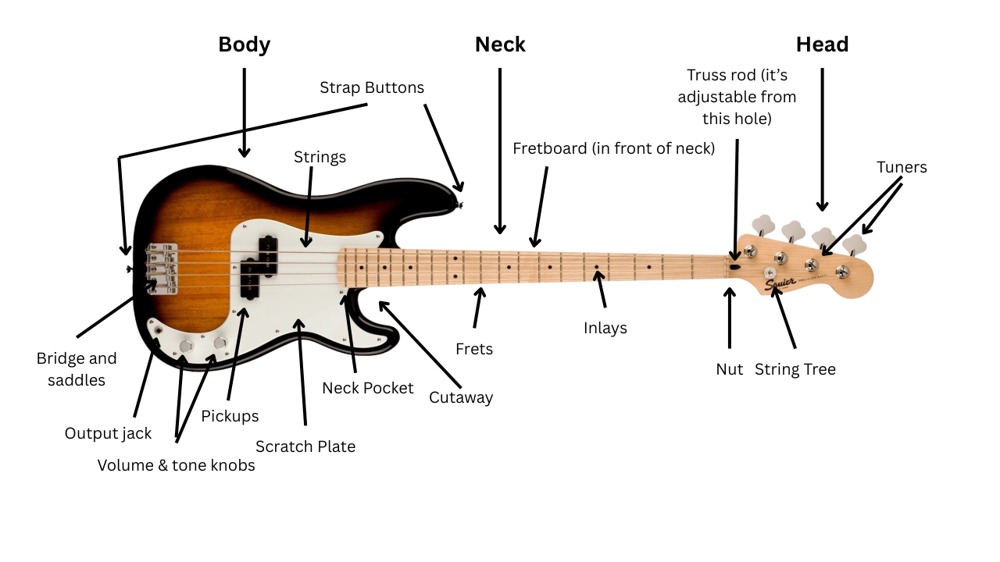

The Fender Squier Sonic Presiscion Bass is a high-quality affordable bass that is perfect for a beginner with a low budget! Costing less than $500 ($489), it's the instument for you!
The instrument's neck is made of Maple, giving it a nice, light shade of wood. The body itself is made of an orange-ish wood, which gets darker and darker the further away from the center of the bass you are. The instument also has a white scratch-plate which all combines into an instantly recognisable and iconic bass guitar.
The bass should be stored in a bag or case, if left in the open, dust and other substances can take a toll on the instrument. The strings should be changed out every once-in-while. You should also be tuning it up each time you play, as it's easy for the intstrument to become out of tune.
